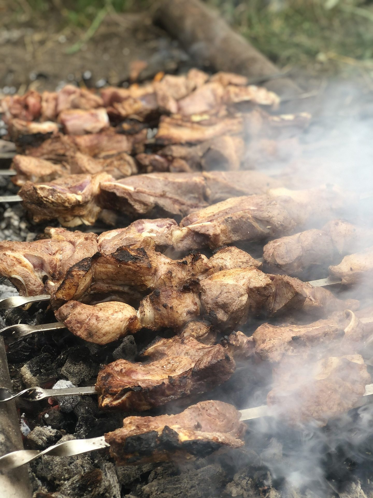
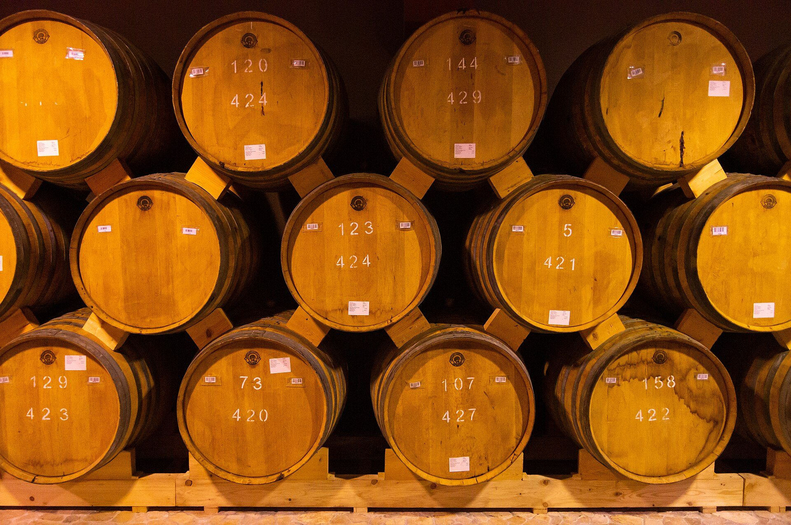
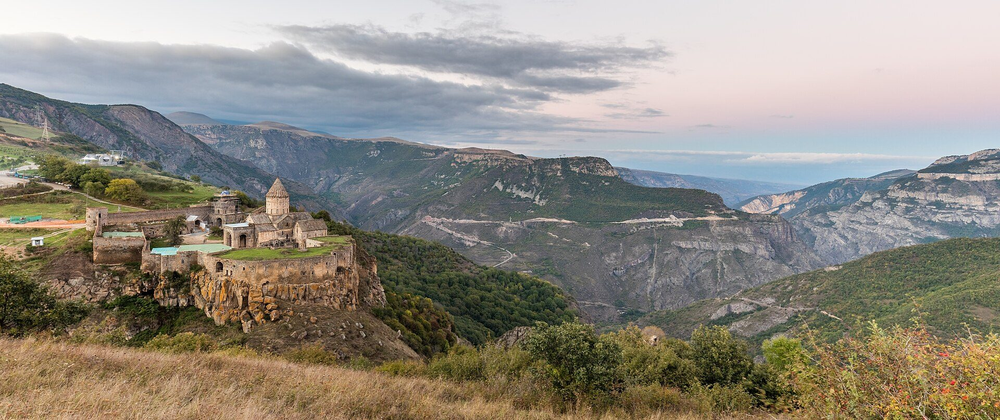
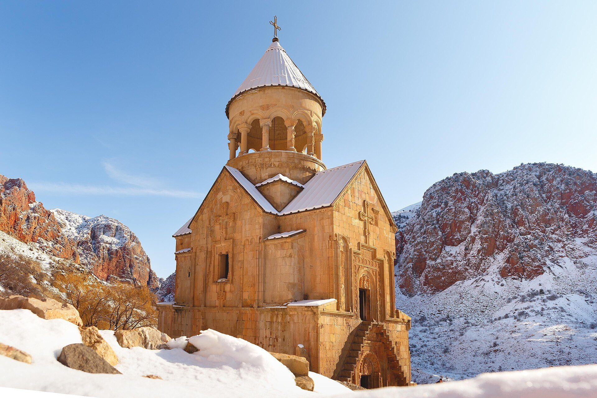
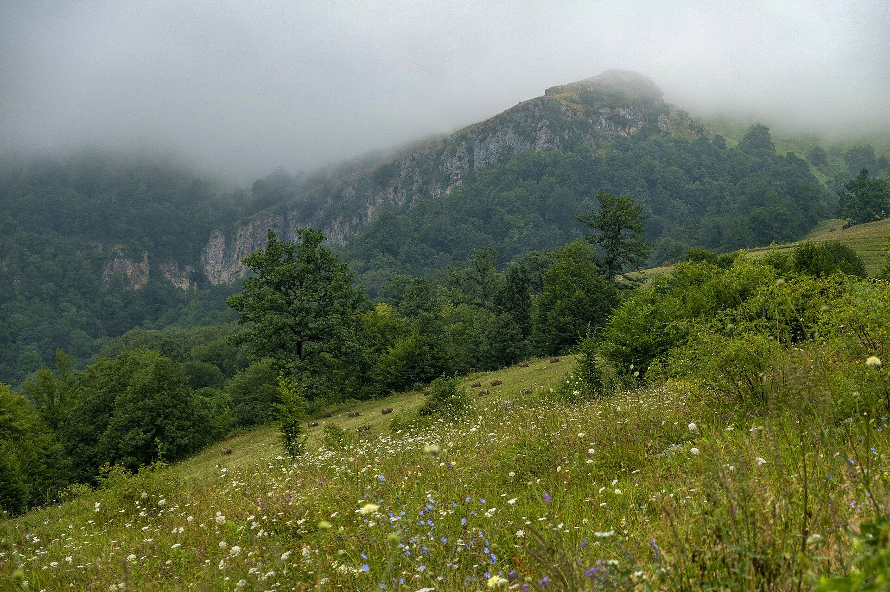
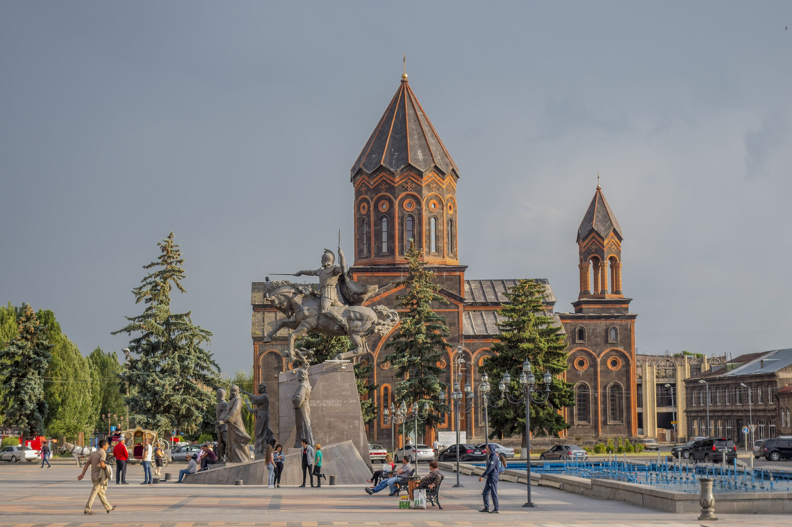

Земля, где каждый уголок рассказывает историю
Армения, расположенная на Южном Кавказе, — одна из древнейших стран мира. Старинные монастыри среди величественных гор, оживлённые городские улицы, тихие деревни и потрясающая природа — здесь каждый путешественник найдёт что-то особенное.
Выберитесь за пределы столицы и откройте настоящую красоту Армении: многовековые монастыри в окружении гор, живописные долины и леса, традиционные деревни, настоящая армянская кухня и легендарное армянское гостеприимство.


Ереван — розовый город
Красивая архитектура, уютные кафе, местные рестораны, живая атмосфера и захватывающие виды на гору Арарат.
Древние монастыри
Многовековые святыни в окружении гор, долин и лесов.
Рай для любителей природы
Озеро Севан, пейзажи Дилижана, скалы Нораванка и Армянское нагорье.
Армянская кухня
Традиционные блюда из свежих местных продуктов, армянские вина и фрукты — за общим столом, с историями и смехом.
Об Армении
Всё, что стоит знать перед поездкой, — от древних традиций и святынь до денег, еды и транспорта.

Армянская культура и искусство
Армянская культура — уникальное сочетание древних традиций и творчества. Музыка, танцы, литература и изобразительное искусство развивались веками и остаются важной частью национальной идентичности.
Одно из самых самобытных армянских искусств — резьба хачкаров, тонко украшенных каменных крестов, которые встречаются по всей стране. Традиционные ремёсла, вышивка, гончарное дело и ковроткачество тоже отражают мастерство, передаваемое из поколения в поколение.
Для путешественников армянская культура — возможность прикоснуться к живому наследию через искусство, традиции и местный колорит.

Армения и религия
У Армении глубокое религиозное наследие: здесь находится Армянская апостольская церковь — одна из древнейших христианских церквей мира. В 301 году христианство стало государственной религией Армении — первой страны, официально принявшей христианство.
Сегодня монастыри и церкви есть по всей стране, многие из них — среди удивительных пейзажей. Эти святыни открывают путешественникам духовные традиции, архитектуру и историю Армении.
Посещение церквей
- Одевайтесь скромно — желательно закрыть плечи и колени.
- Говорите тихо, особенно во время службы.
- Не используйте вспышку во время богослужения.
- Зажечь тонкую свечу у входа — красивая местная традиция.
Армянская кухня
Поездка в Армению немыслима без её кухни. Традиционные блюда готовят из свежих местных продуктов и обычно едят за большим общим столом — с историями, тостами и искренним гостеприимством.




Валюта Армении
Официальная валюта Армении — армянский драм (AMD), обозначается символом ֏. В обращении банкноты и монеты разного номинала.
Иностранную валюту легко обменять в банках и лицензированных обменных пунктах, которых много в Ереване и других крупных городах. Международные банковские карты принимают во многих отелях, ресторанах и магазинах, но для небольших заведений и рынков лучше иметь при себе наличные.

Транспорт
Армения компактна, поэтому до большинства достопримечательностей можно доехать из Еревана за день. Столицу удобно обходить пешком, а передвигаться по стране просто и недорого.
- Аэропорт. Международный аэропорт Звартноц находится примерно в 12 км от центра — недолгий трансфер или поездка на такси.
- Такси. Yandex Go и GG — недорого, надёжно, цена известна заранее.
- Метро. В Ереване одна линия метро — быстрый способ пересечь город.
- Маршрутки. Связывают Ереван с Севаном, Дилижаном, Гюмри и другими городами.
- Туры и трансферы. Самый удобный способ добраться до горных монастырей и отдалённых мест.
Что посмотреть
Помимо классических маршрутов — места, в которые путешественники влюбляются.





Полезные советы
Цветущие долины и мягкая погода — идеально для экскурсий и походов.
В Ереване жарко, а на Севане и в горах — прекрасно.
Сезон урожая и вина, золотые пейзажи.
Заснеженные монастыри, лыжи в Цахкадзоре и праздничный Ереван.
Местную SIM-карту или eSIM легко купить; бесплатный Wi-Fi есть почти во всех кафе и отелях.
230 В, европейские вилки (тип C / F) — как в России, переходник не нужен.
Воду из-под крана в Ереване можно пить, а на улицах есть бесплатные питьевые фонтанчики — пулпулаки.
Армения — гостеприимная и безопасная страна; достаточно обычных мер предосторожности.
Это впечатление
Частые вопросы
Нужна ли виза в Армению?
Это зависит от гражданства. Граждане многих стран могут въехать в Армению без визы — в том числе граждане России и других стран СНГ, большинства стран ЕС, США, Великобритании, Канады, ОАЭ, Катара, Австралии и Японии. Правила зависят от гражданства и срока пребывания, поэтому перед поездкой стоит проверить актуальные условия въезда.
Когда лучше ехать в Армению?
Армения прекрасна круглый год — у каждого сезона своё очарование.
На каком языке говорят в Армении?
Государственный язык — армянский. Русский широко распространён, а в туристических местах говорят и по-английски.
Можно ли расплачиваться картой?
Да. Карты принимают в отелях, ресторанах, супермаркетах и многих магазинах. Наличные пригодятся в небольших заведениях и на рынках.
Безопасно ли в Армении туристам?
Да, Армения — гостеприимная и комфортная страна для туристов. Достаточно соблюдать обычные меры предосторожности и местные правила.
Что обязательно попробовать в Армении?
Обязательно попробуйте традиционную армянскую кухню: хоровац, толму, лаваш, гату, местные фрукты, армянское вино и знаменитый армянский коньяк.
Можно ли пить воду из-под крана?
Да. В Ереване и во многих других районах Армении воду из-под крана можно пить. Бутилированная вода тоже продаётся везде.
Будет ли мобильная связь и интернет?
Да. Мобильная связь, Wi-Fi и интернет доступны в Ереване и в большинстве туристических мест. Бесплатный Wi-Fi есть в отелях, кафе, ресторанах и других общественных местах. Местную SIM-карту и пакет мобильного интернета тоже легко купить. А в наши туры мобильный интернет уже включён — в виде eSIM.
Где каждое путешествие становится воспоминанием
Откройте её историю, пейзажи, вкусы и людей.
Смотреть тур